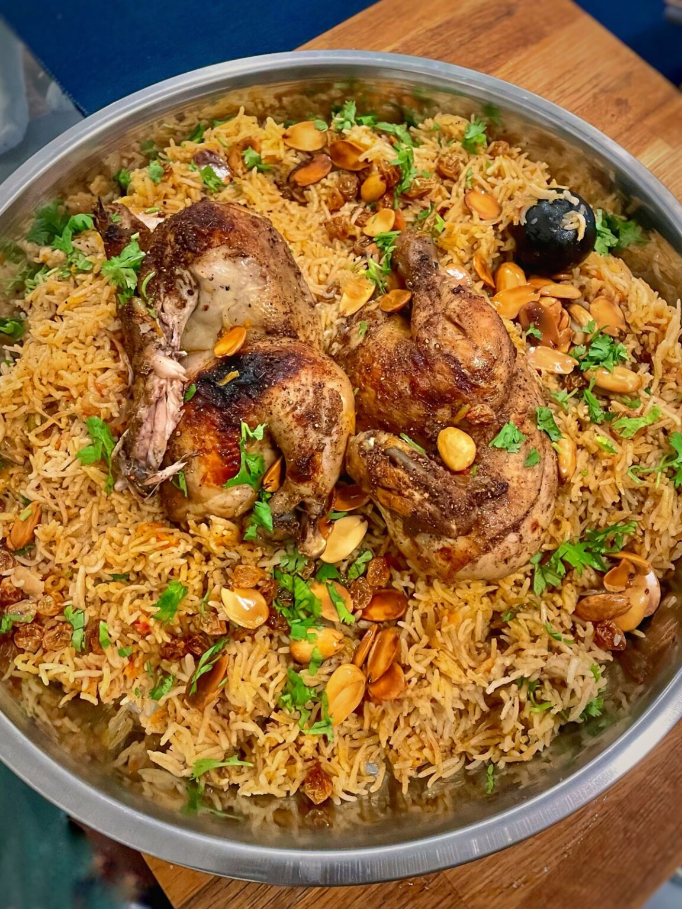

Return to main page
Al Kabsa Recipe

Get ready to impress your loved ones by serving this delicious Chicken Kabsa! This national dish of Saudi Arabia brings together juicy chicken and flavorful Kabsa rice for a meal that's perfect for any occasion. It's the ultimate choice when you want to impress your friends and family. So, why not channel your inner chef and whip up a delicious feast that'll have everyone asking for seconds?
What is Kabsa
Kabsa, known as the national dish of Saudi Arabia, features a delightful combination of rice and meat, served alongside fried raisins, almonds, yoghurt sauce, and green salads. Its name derives from the cooking technique of "pressing," showcasing its flavorful blend of spices distinct from those used in Machboos and Mandi.
Ingredients
- 1½ cups basmati rice, washed and soaked for 30 mins and drained completely
- ¼ cup cooking oil, olive oil or sunflower or canola etc.
- ⅓ cup almonds, blanched, peeled and sliced
- ¼ cup black raisins, fried till puffed
- 4 green cardamom
- 4 to 6 cloves
- 2 inch cinnamon stick
- 1 dried black lime, (loomi)
- 1 bay leaf
- 3 medium-sized red onions, diced finely
- 1 teaspoon ginger garlic paste
- 300 grams tomatoes, chopped or pureed (2 large)
- 60 grams carrot, grated (half of a small carrot)
- 1 tablespoon tomato paste
- 800 grams skinless whole chicken, or with skin (cut into 2 or 4 pieces)
- 1 teaspoon black pepper powder
- 1 teaspoon coriander powder
- 1 teaspoon cumin powder
- ¼ teaspoon allspice powder, or cinnamon powder
- ¼ teaspoon cardamom powder
- salt to taste
- 2¼ cups water, see notes
Instructions
- Heat the oil in a wide-mouthed and deep pot with a flat heavy bottom on a medium flame.
¼ cup cooking oil olive oil or sunflower or canola etc.
- Fry the prepped almonds until golden brown and remove with a slotted spoon and keep aside.
⅓ cup almonds blanched, peeled and sliced
- Fry the raisins till puffed remove and keep them aside.
¼ cup black raisins fried till puffed
- Add all the whole spices and saute until fragrant.
4 green cardamom
4 to 6 cloves
2 inch cinnamon stick
1 dried black lime (loomi)
1 bay leaf
- Add the chopped onions, and saute until translucent.
3 medium-sized red onions diced finely
- Add the ginger-garlic paste, and saute until onions start to brown. ( 5mins)
1 teaspoon ginger garlic paste
- Add the cut chicken skin side down and cook until browned. Cook on high partially covered until chicken turns white.
800 grams skinless whole chicken or with skin (cut into 2 or 4 pieces)
- Add all the spice powders and salt and give it a good mix. Here you can also add a teaspoon of orange zest.
1 teaspoon black pepper powder
1 teaspoon coriander powder
1 teaspoon cumin powder
¼ teaspoon allspice powder or cinnamon powder
¼ teaspoon cardamom powder
salt to taste
- Add the chopped tomatoes, tomato paste, and grated carrot (optional) and cook until oil surfaces.
300 grams tomatoes chopped or pureed (2 large)
1 tablespoon tomato paste
60 grams carrot grated (half of a small carrot)
- Add at least 2 cups of water and adjust the salt.
2¼ cups water see notes
- Cover and cook on low to medium until chicken is cooked completely.
- Remove the chicken pieces and place them in a pan.
- Add the drained rice, more hot water if required and adjust the salt. (make sure there is water above the grains)
1½ cups basmati rice washed and soaked for 30 mins and drained completely
- Cook on medium to high flame until you can see the grains on the surface. (5 mins)
- Reduce the flame to the lowest. Place a foil or clean kitchen cloth and then cover with a tight lid. Slide a flat pan under the pot - this prevents the burning of food and distributes heat evenly. Cook for 10 minutes on the lowest flame.
- Switch off and don't disturb for another 10 minutes.
- Take the chicken pieces and grill or broil them in the hot oven or stovetop with some butter until browned.
- Serve Kabsa topped with the roasted chicken pieces and the fried almonds and raisins along with salads and yoghurt.
Enjoy :)
Return to main page